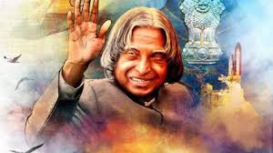

Dr. A.P.J ABDUL KALAM

The People's president.
-
1931 - Born in Rameswaram, TamilNadu.
-
1952 - After completing his education at the Schwartz Higher Secondary School, Ramanathapuram, Kalam went on to attend Saint Joseph's College, Tiruchirappalli, from where he graduated in physics.
-
1954 - He moved to Madras in 1955 to study aerospace engineering in Madras Institute of Technology.
You can find more about him here